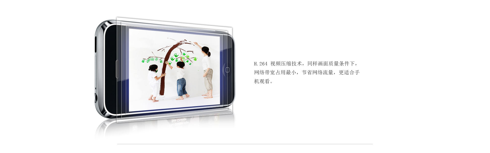

720p高清视频质量,丰富的图像细节和清晰的图像质量。
云台控制：您可以通过云台控制，移动到您想查看的区域，监控范围更广泛。
通过领先的P2P 客户端软件与P2P云服务器，用户无需设置无线路由器与配置DDNS即可实现观看。只需要您用手机轻轻一扫，立马可以进行观看，生活就是这样简单。
通过P2P 客户端软件，用户可通过iPhone,iPad,Android phone，电脑远程观看。
H.264 视频压缩技术，同样画面质量条件下，网络带宽占用最小，节省网络流量，更适合手机观看。
不只白天能工作，黑夜照样行，全天候监控，不下班。

通过WI-FI方便地连接到无线路由器，可以轻松摆脱布线的烦恼。
本机可存储图像与视频。
| 接口 | 1个10/100M以太网RJ45口，1个 WI-FI接口，1个 TF卡接口，1个电源接口， 1个复位按钮，内置麦克风，1个3.5mm音频输出接孔，内置喇叭，10颗红外灯， 6米有效 |
| 云台 | 水平转角 290° 垂直转角 120° |
| 感应器 | 1/4” CMOS百万像素传感器 |
| 分辨率 | 720P(1280x720)/640x360/320x180 |
| 镜头 | f=3.6mm,F=2.0,支持IRCUT |
| 尺寸 | 108*102*127mm |
| 电源输入 | 5V DC,<6W |
| 无线速率 | 150Mbps |
| 工作频段 | 2.4 GHz |
| 工作信道 | 1月13日 |
| 支持标准 | TCP/IP,DHCP,ARP,ICMP,FTP,SMTP,DDNS,NTP,UPnP,RTSP,RTP,HTTP,TCP, UDP/IP,P2P,ONVIF,H.264,MJPEG,802.11b,802.11g,802.11n |
| 无线安全机制 | WPA-/WPA2-PSK,WPA-/WPA2-AES,WEP |
| 视频压缩 | H.264 MJPEG |
| 最大帧率 | 30帧/秒 |
| 码率 | 32kbps - 4.096Mbps |
| 安全 | 三级用户权限 |
| 移动侦测 | 支持4区域移动侦测 |
| 管理软件 | 设置向导，手机端P2P远程监控软件（支持ios,Android）,PC端P2P远程监控 软件（支持Windows） |
| 音频 | 双向语音 音频压缩技术: G.711 /G.726 |
| 最低系统配置 | CPU2.0GHz或以上（推荐3.0GHz),内存256MB或以上（推荐1.0GB),显卡64M 或以上 Windowa7,Vista,XP,Mac OS操作系统；/Android2.3,ios4.3手机平台 Internet Explorer6.0及以上版本或者兼容浏览器，Firefox等 |
| 包装配件 | 网络摄像机一台,保修卡,支架一套, 网线一根,电源适配器一个,快速安装指南 |
| 温度 | 工作温度：-10℃ ~ 50℃ 存储温度：-40℃ 到 70℃ |
| 湿度 | 工作湿度：10%-80% RH无凝结 存储湿度：3% - 90% RH无凝结 |
| 认证 | CE FCC RoHS |